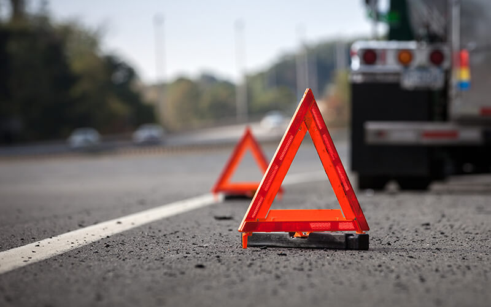
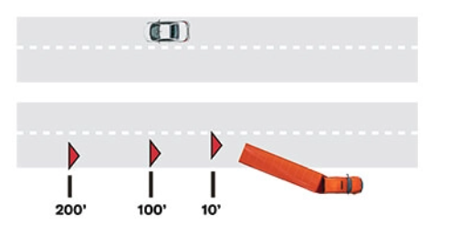
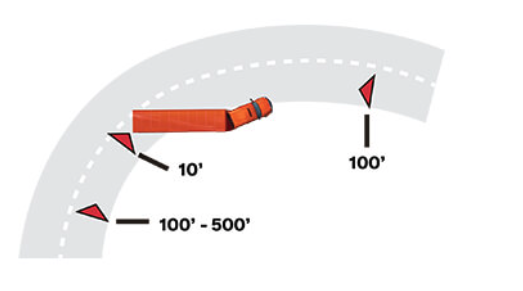

Master Emergency Triangle Placement as a Truck Driver
Освойте размещение аварийных треугольников как водитель грузовика

Stopping on a highway or highway shoulder can be dangerous, especially if the road is winding, dark, or has poor visibility due to weather conditions. The more visible you and your truck are during an emergency stop, the safer everyone on the road will be.
Остановка на шоссе или обочине может быть опасной, особенно если дорога извилистая, темная или имеет плохую видимость из-за погодных условий. Чем заметнее будете вы и ваш грузовик во время аварийной остановки, тем безопаснее будет для всех на дороге.
This is why it’s important for truck drivers to know proper emergency triangle placement. Keep reading to learn about where to place emergency triangles and how to do it safely.
Вот почему так важно, чтобы водители грузовиков знали, как правильно размещать аварийные треугольники. Читайте дальше, чтобы узнать, где их ставить и как делать это безопасно.
Disclaimer:
Отказ от ответственности:
Drivers should only stop on a highway or highway shoulder in the event of a true emergency in which a truck will no longer safely move or a driver is physically unable to drive. Other stops such as rest breaks, swapping drivers, or adjusting navigation should only be completed in a safe and legal parking location.
Водители должны останавливаться на шоссе или обочине только в случае реальной аварийной ситуации, когда грузовик не может безопасно продолжать движение или водитель физически не может управлять автомобилем. Другие остановки, такие как отдых, смена водителей или корректировка маршрута, должны выполняться только в безопасных и законных местах для парковки.
How to Set Up Emergency Triangles
Как установить аварийные треугольники
The first thing every driver should do when stopped on the traveled portion or shoulder of a highway, especially when putting out emergency triangles, is turn on their four-way flashers. This ensures that your vehicle is more visible to approaching motorists.
Первое, что должен сделать каждый водитель при остановке на проезжей части или обочине шоссе, особенно при установке аварийных треугольников, – включить аварийные огни. Это сделает ваш автомобиль более заметным для других водителей.
Drivers should also always wear reflective gear when putting down and collecting emergency triangles and should carry the triangles so the reflective side of the warning devices is facing oncoming traffic.
Водители также должны всегда носить светоотражающую одежду при установке и сборе аварийных треугольников и держать треугольники так, чтобы светоотражающая сторона была направлена к встречному движению.
How Many Reflective Triangles Should You Carry in Your Truck?
Сколько светоотражающих треугольников должно быть в вашем грузовике?
Drivers are required to carry three emergency triangles and place them in three locations during a stop.
Водители обязаны иметь три аварийных треугольника и размещать их в трех местах при остановке.
How Far Apart Should You Place Reflective Triangles?
На каком расстоянии следует размещать светоотражающие треугольники?
Emergency triangles must be placed within 10 minutes of stopping and should be kept in the passenger side box so they can be accessed in a way that keeps the driver away from traffic. Triangle placement locations may vary based on the location a driver stops and are spaced out to ensure that other motorists can see a stopped truck from a distance that still allows for a change in lanes or a slowing of speed.
Аварийные треугольники должны быть размещены в течение 10 минут после остановки и храниться в боксе с пассажирской стороны, чтобы водитель мог безопасно достать их, не выходя на проезжую часть. Места установки треугольников могут различаться в зависимости от места остановки водителя, но они должны быть расположены так, чтобы другие водители могли увидеть стоящий грузовик с достаточного расстояния, позволяющего изменить полосу движения или снизить скорость.
Two Lane (Traffic in Both Directions and Undivided Highways)
Двухполосная дорога (движение в обоих направлениях, неразделенные шоссе)
- One triangle 100 ft. in front of the vehicle, centered in the lane the vehicle occupies.
Один треугольник на расстоянии 100 футов перед автомобилем, по центру полосы, которую он занимает.
- One triangle 10 ft. behind the vehicle on the traffic side of the vehicle.
Один треугольник на расстоянии 10 футов позади автомобиля, на стороне движения.
- One triangle 100 ft. behind the vehicle in the center of the lane the vehicle occupies.
Один треугольник на расстоянии 100 футов позади автомобиля, по центру полосы, которую он занимает.

Divided Highways and One-Way Roads
Разделенные шоссе и дороги с односторонним движением
When stopping on the shoulder of a one-way road or divided highway, you do not need to worry as much about motorists seeing you from the front, as everyone should be coming from one direction. This means that drivers should be placing all three of their triangles behind their vehicle in the following configuration:
При остановке на обочине дороги с односторонним движением или разделенного шоссе вам не нужно беспокоиться о том, что вас увидят с передней стороны, так как все автомобили должны двигаться в одном направлении. Это означает, что водители должны размещать все три треугольника позади своего автомобиля в следующей конфигурации:
- One triangle 10 ft. behind the vehicle on the traffic side of the vehicle.
Один треугольник на расстоянии 10 футов позади автомобиля, на стороне движения.
- One triangle 100 ft. behind the vehicle in the center of the lane the vehicle occupies.
Один треугольник на расстоянии 100 футов позади автомобиля, по центру полосы, которую он занимает.
- One triangle 200 ft. behind the vehicle in the center of the lane it occupies.
Один треугольник на расстоянии 200 футов позади автомобиля, по центру полосы, которую он занимает.

Obstructed View (Hills and Curves)
Ограниченная видимость (холмы и повороты)
Getting stopped on a hill or on the side of a road that curves can be especially dangerous, as oncoming motorists’ view is even more obstructed. Due to the increased lack of visibility in these kinds of locations, emergency triangle placement should be a further distance than in other situations.
Остановка на холме или на обочине извилистой дороги может быть особенно опасной, так как обзор для встречных водителей еще больше ограничен. Из-за повышенной скрытости в таких местах аварийные треугольники следует размещать на большем расстоянии, чем в других ситуациях.
- If stopped on a two-lane road, place one triangle at least 100 ft. ahead of the vehicle.
Если остановились на двухполосной дороге, разместите один треугольник не менее чем за 100 футов перед автомобилем.
- One triangle should be placed 10 ft. behind the vehicle on the traffic side of the vehicle.
Один треугольник должен быть размещен на 10 футов позади автомобиля, на стороне движения.
- Move the rearmost triangle between 100 ft. and 500 ft. back down the road to provide ample warning.
Переместите самый дальний треугольник на расстояние от 100 до 500 футов назад по дороге для обеспечения достаточного предупреждения.

Home